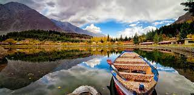

About me
This page is all about me
My name is Nadia Ahmed and I am 23 years old. I am American an Citizen. Currently I am doing BS-ITM from IIT as a transfer student.
Early Life
I was born in Pakistan. I've done my schooling in Pakistan. i went to Kips College for my studies. After college i did some computer courses that built my interest in computer and Information technology (IT). Later on i got admission in Institte of Southern Punjab, Multan for my Associates in Information Technoogy Management. Meantime i was fascinated with Cyber Security so i did a course namesd as Certified Ethical Hacker (CEH) by EC- Council. In short i've lived most of my life in Pakistan.
More About Pakistan
Pakistan, officially the Islamic Republic of Pakistan, is a country in South Asia. It is the world's fifth-most populous country, with a population of almost 242 million, and has the world's second-largest Muslim population. Pakistan is the 33rd-largest country by area, spanning 881,913 square kilometres (340,509 square miles).
What I love About Pakistan
Pakistan have so many beautiful places to visit and explore so many cultures along with yummy food. There is so much I love about it.
Beautiful Places in Pakistan to visit
There are so many beautiful places to visit in Pakistan but if you want to see some really beautiful views you should explore Northern areas of Pakistan
Some of these places are listed below:
- Naran/Kaghan
- Skardu
- Hunza
- Fairy Meadows
Interests
There are so many things i love to do. Some of them are:-
- Traveling
- Food
- Exploring new things
- Capturing Moments
Traveling
I love to travel. Traveling makes me so happy. There is a quote which says “Travel is my therapy.” It really describes my life. Travel is my therapy. I forgets everything when i travel.
Food
Food is my weakness. I can't resist food. I like all type of food but something sweet is like treasure.
Exploring New Things
I love to explore new things, new culture, new food, new places & new people. I admit old is gold but new things are pretty good too!
Capturing Moments
Capturing moments is my favourite job. I love to capture pictures of small moments and enjoy it but some time I really get annoyed when it comes to take pictures of me. Because people around me dont know how to take good pictures but that's okay. Enjoy every little moments in your life.
Anyways that's it! Have a good day. See ya on the next page!